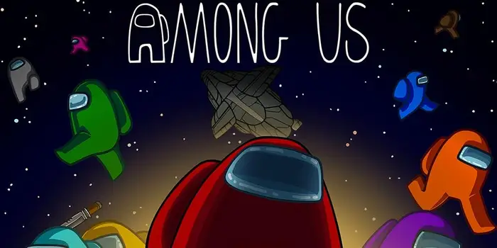

Among Us[c] (с англ.«Среди нас») — многопользовательская компьютерная игра, разработанная американской игровой студией Innersloth, которая была выпущена для устройств под управлением iOS и Android 15 июня 2018 года, а затем для компьютеров Windows 16 ноября 2018 года. Ввиду резкого всплеска популярности, в декабре 2020 года игра стала доступна на консолях Nintendo Switch, а в декабре 2021 — на PlayStation 4, PlayStation 5, Xbox One и Xbox Series X/S. Отдельная VR-версия игры, Among Us VR , вышла 10 ноября 2022 года.
Игра была вдохновлена командной ролевой игрой с детективным сюжетом «Мафия», а также научно-фантастическим фильмом ужасов «Нечто». В классическом режиме игроки случайным образом разделяются на две команды: члены экипажа космического корабля и скрытые среди них предатели. Члены экипажа не знают, кто из их товарищей предатель, и могут голосованием «изгнать» любого персонажа, пытаясь выявить предателей во время экстренных собраний. Члены экипажа выигрывают, если им удастся избавиться от предателей или хотя бы довести до завершения все предложенные экипажу задания в виде мини-игр; предатели же выигрывают, если им удастся, не попадаясь, скрытно убить достаточное количество членов экипажа либо довести до завершения крупную диверсию (саботаж) — например, взорвать реактор или прекратить подачу кислорода. В 2022 году был добавлен новый режим — «прятки». Вместо того, чтобы вычислять предателя, игроки в начале раунда узнают его личность, и прячутся от него по ходу игры, попутно всё так же выполняя задания. На выбор доступно 5 локаций — это The Skeld, MIRA HQ, Polus, The Airship, The Fungle.

Хотя игра вышла в 2018 году, свою популярность она получила лишь в середине 2020 года благодаря контенту по ней на стриминговой платформе Twitch и видеохостинге YouTube в условиях коронавирусной самоизоляции. В ноябре 2020 года количество игроков по всему миру составляло около 500 миллионов. Игра получила положительные отзывы от критиков, которые оценили игровой процесс, а также сеттинг, однако некоторые отмечали технические неисправности и проблему читерства. Among Us также получила несколько престижных наград. В ответ на популярность оригинальной игры в августе 2020 года был анонсирован сиквел — Among Us 2, однако запланированное продолжение было отменено уже через месяц. Команда заявила, что сконцентрировала своё внимание на развитии оригинальной игры. На тему Among Us появилось большое количество фанатского творчества и интернет-мемов.
